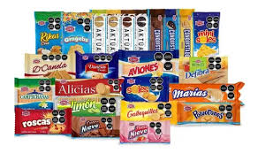
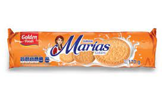
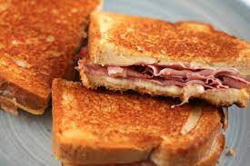
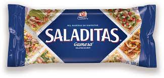
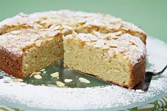

GALLETAS
La galleta es una preparación culinaria de pequeño tamaño, dulce o salada, horneada y hecha normalmente a base de harina de trigo, huevos, azúcar, mantequilla o aceites vegetales o grasas animales.
El top 5 de las mejores galletas son
|  |
Marias
Están hechas a base de harina de trigo, azúcar, sal y mantequilla o aceites vegetales. En la actualidad se les agregan estabilizantes, colorantes y saborizantes artificiales. Son muy consumidas, pues se utilizan como base para tartas y para dar textura y sabor a diversos pasteles.
|  |
Sandwiches.
Emparedado hecho con dos rebanadas de pan de molde entre las que se coloca jamón , queso , embutido , vegetales u otros alimentos .
|  |
Tipo Saladitas.
Saladitas son unas ricas galletas Gamesa elaboradas con ingredientes selectos y un rico toque de sal que acompañarán tus platillos, incluso tus recetas de mariscos.
|  |
Tipo Crackers.
El término cracker se utiliza para describir a alguien que irrumpió en los sistemas informáticos, eludió contraseñas o licencias en programas informáticos o violó intencionalmente la seguridad informática de otras formas.
| |
Populares (tipo animalitos) y Chispas de Chocolate (empatadas).
Las chispas de chocolate o pepitas de chocolate son pequeños trozos de chocolate. A menudo se venden en una ronda, de forma plana o con forma de lágrima. Están disponibles en numerosos tamaños, desde grandes a miniaturas, pero en general miden alrededor de 1 centímetro de diámetro.
|  |